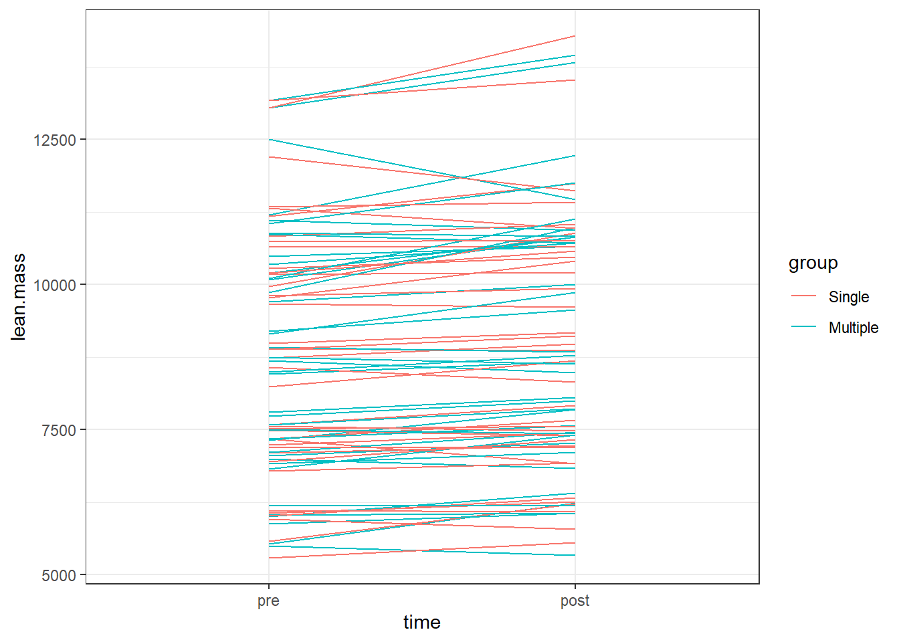
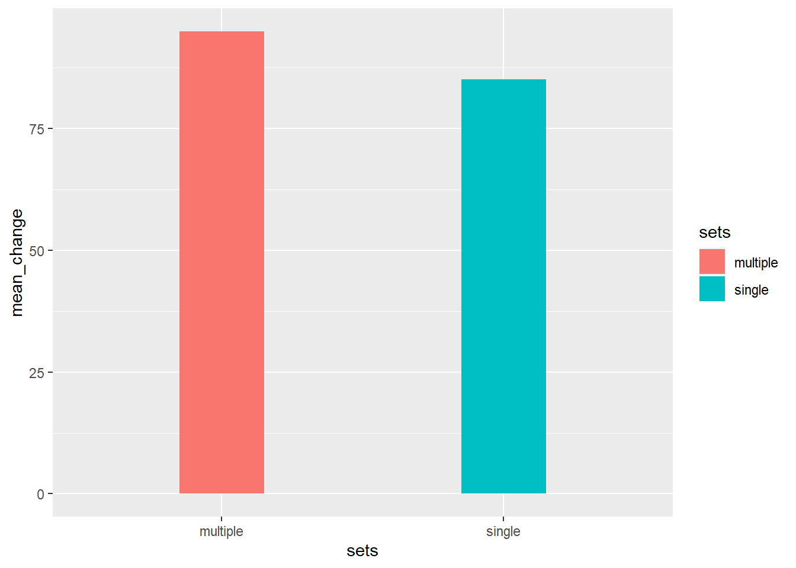

Assignment 5: Analyzing repeated measures experiments
Lean mass

# A tibble: 1 × 3
multiple single diff
<dbl> <dbl> <dbl>
1 289. 174. 115.# A tibble: 82 × 8
participant sex include sets leg pre post change
<chr> <chr> <chr> <chr> <chr> <dbl> <dbl> <dbl>
1 FP28 female incl multiple L 7059 7273 214
2 FP28 female incl single R 7104 7227 123
3 FP40 female incl single L 7190 7192 2
4 FP40 female incl multiple R 7506 7437 -69
5 FP21 male incl single L 10281 10470 189
6 FP21 male incl multiple R 10200 10819 619
7 FP34 female incl single L 6014 6326 312
8 FP34 female incl multiple R 6009 6405 396
9 FP23 male incl single L 8242 8687 445
10 FP23 male incl multiple R 8685 8480 -205
# … with 72 more rows
Call:
lm(formula = change ~ sets, data = dat)
Residuals:
Min 1Q Median 3Q Max
-1318.85 -218.31 -21.85 204.44 1070.69
Coefficients:
Estimate Std. Error t value Pr(>|t|)
(Intercept) 288.85 61.59 4.690 1.18e-05 ***
setssingle -114.54 87.10 -1.315 0.192
---
Signif. codes: 0 '***' 0.001 '**' 0.01 '*' 0.05 '.' 0.1 ' ' 1
Residual standard error: 384.6 on 76 degrees of freedom
(4 observations deleted due to missingness)
Multiple R-squared: 0.02225, Adjusted R-squared: 0.009383
F-statistic: 1.729 on 1 and 76 DF, p-value: 0.1925# A tibble: 2 × 2
sets mean_change
<chr> <dbl>
1 multiple 289.
2 single 174.Strength
# A tibble: 146 × 8
participant sex include time sets leg exercise load
<chr> <chr> <chr> <chr> <chr> <chr> <chr> <dbl>
1 FP13 male incl pre single R legpress 115
2 FP13 male incl pre multiple L legpress 115
3 FP13 male incl post single R legpress 230
4 FP13 male incl post multiple L legpress 235
5 FP1 male excl pre single R legpress 138.
6 FP1 male excl pre multiple L legpress 138.
7 FP1 male excl post single R legpress 180
8 FP1 male excl post multiple L legpress 190
9 FP16 female incl pre single R legpress 85
10 FP16 female incl pre multiple L legpress 80
# … with 136 more rows

# A tibble: 1 × 3
multiple single diff
<dbl> <dbl> <dbl>
1 94.9 85.1 9.85# A tibble: 78 × 9
participant sex include sets leg exercise pre post change
<chr> <chr> <chr> <chr> <chr> <chr> <dbl> <dbl> <dbl>
1 FP13 male incl single R legpress 115 230 115
2 FP13 male incl multiple L legpress 115 235 120
3 FP1 male excl single R legpress 138. 180 42.5
4 FP1 male excl multiple L legpress 138. 190 52.5
5 FP16 female incl single R legpress 85 155 70
6 FP16 female incl multiple L legpress 80 165 85
7 FP17 male incl multiple R legpress 280 340 60
8 FP17 male incl single L legpress 280 370 90
9 FP12 female incl multiple R legpress 200 290 90
10 FP12 female incl single L legpress 200 290 90
# … with 68 more rows
Call:
lm(formula = change ~ sets, data = dat)
Residuals:
Min 1Q Median 3Q Max
-1318.85 -218.31 -21.85 204.44 1070.69
Coefficients:
Estimate Std. Error t value Pr(>|t|)
(Intercept) 288.85 61.59 4.690 1.18e-05 ***
setssingle -114.54 87.10 -1.315 0.192
---
Signif. codes: 0 '***' 0.001 '**' 0.01 '*' 0.05 '.' 0.1 ' ' 1
Residual standard error: 384.6 on 76 degrees of freedom
(4 observations deleted due to missingness)
Multiple R-squared: 0.02225, Adjusted R-squared: 0.009383
F-statistic: 1.729 on 1 and 76 DF, p-value: 0.1925